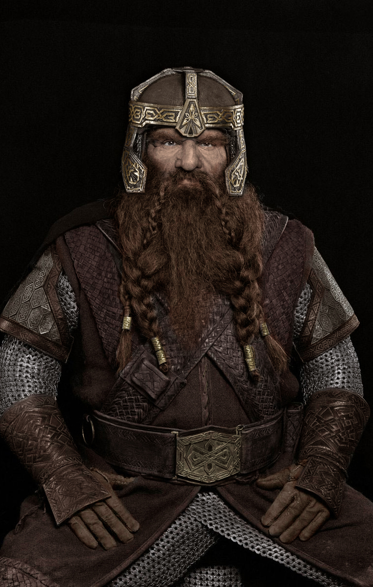

Dwarves
The Dwarves are described as shorter and stockier than Elves and Men, able to withstand both heat and cold. Though they are mortal, Dwarves have an average lifespan of 250 years.They breed slowly, for no more than a third of them are female, and not all marry; also, female Dwarves look and sound (and dress, if journeying—which is rare) so alike to Dwarf-males that other folk cannot distinguish them, and thus others wrongly believe Dwarves grow out of stone.Dwarves are great metalworkers, smiths and stoneworkers.